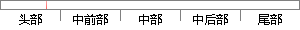

认证方式简单，只需要用户提供足够的语音信息即可，不用像指纹或虹膜识别技术需要将人体器官贴近信息采集仪器。
片段位置图

相似结果|
相似片段 1：方式。说话人识别能够在用户不知不觉中就能够做完身份验证，不必要与当事人进行直接接触。2．认证方式非常简单。用户只需提供足够语音信息即可，不用像指纹或虹膜识别技术需要把手或眼睛贴近扫描仪器；3．实现成本
相似片段 2：，不必要与当事人进行直接接触。．认证方式非常简单。用户只需提供足够语音信息即可，不用像指纹或虹膜识别技术需要把手或眼睛贴近扫描仪器；3．实现成本非常低廉，相比于各种指纹、掌纹、或虹膜认证技术需要昂贵
|
※ 片段修改建议 ※
近似词参考：- 方式：体例 体式格局 方法
- 简单：简略 简朴
- 提供：供给 供应
- 足够：充足
- 即可：便可
- 不用：不消
- 识别：辨认
- 技术：手艺 技能
- 需要：必要
- 贴近：切近
- 采集：收集 收罗
系统自动生成语句： 认证体例简略，只必要用户供给充足的语音信息便可，不消像指纹或虹膜辨认手艺必要将人体器官切近信息收集仪器。
注：本片段修改建议为系统自动生成，仅供参考。